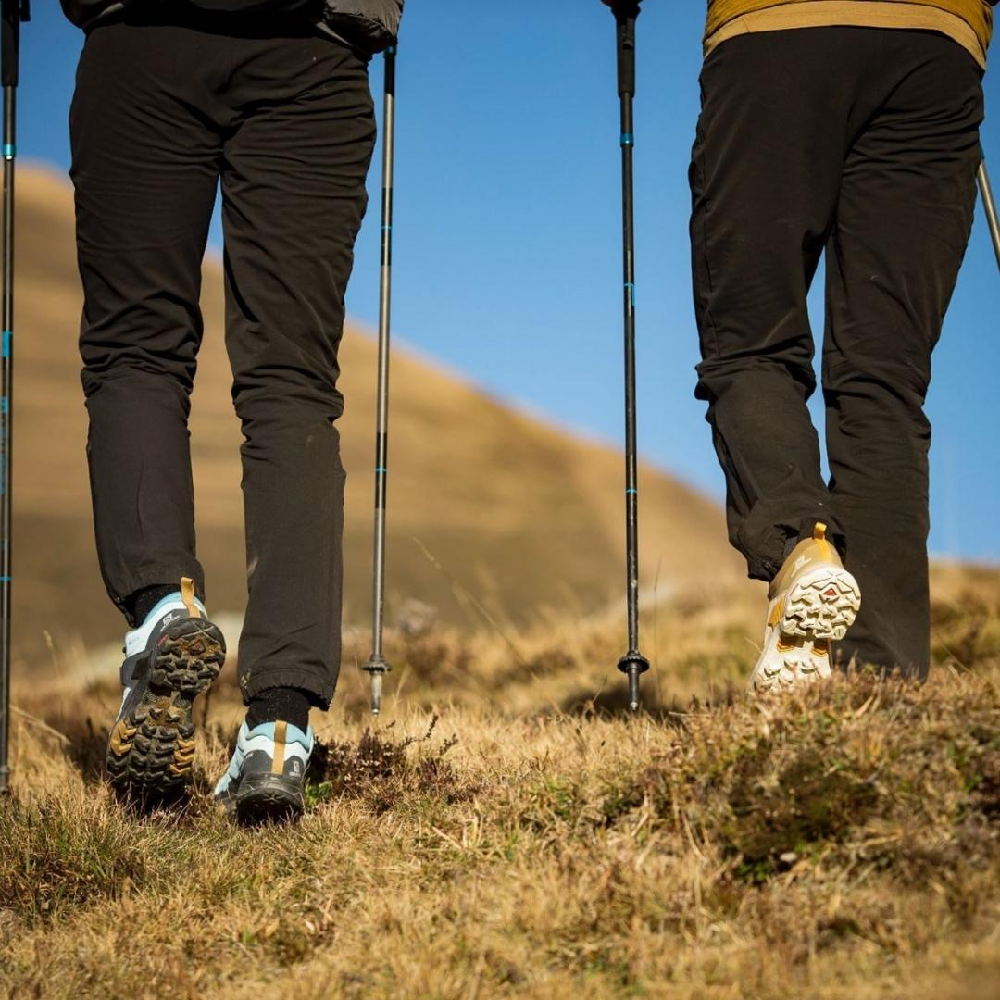

"Black Mountain Dağ Sporu Giyiminde Tarz ve Konforun Buluştuğu Yerli"
Doğanın sınırsız özgürlüğünde, Black Mountain giyim koleksiyonları ile dağ sporlarının keyfini çıkarın.
İster kayak yaparken, ister dağ yürüyüşlerinde olsun, tarz ve fonksiyonellikle buluşan giysilerimiz size her koşulda destek olacak.
Black Mountain Dağ Sporu Giyim Koleksiyonu İçerikleri:
Kış Sporları İçin Ceketler:
- Yalıtımlı kayak ceketleri
- Su geçirmez snowboard ceketleri
- Rüzgar geçirmez kış sporları ceketleri

Outdoor Pantolonlar:
- Su geçirmez dağcı pantolonları
- Esnek trekking pantolonları
- Dayanıklı kamp pantolonları

Termal Katmanlar:
- Polar polarlar ve sweatshirt'ler
- Termal uzun kollu tişörtler
- İnce ve ısı yalıtımlı kazaklar

Aksesuarlar:
- Polar boyunluklar ve bere
Ayakkabılar:
- Yürüyüş için su geçirmez botlar
- Dağcılık için dayanıklı ayakkabılar
- Kar botları ve kayak için özel ayakkabılar